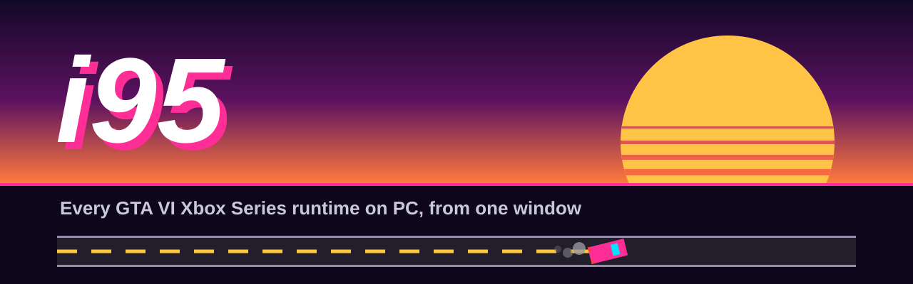
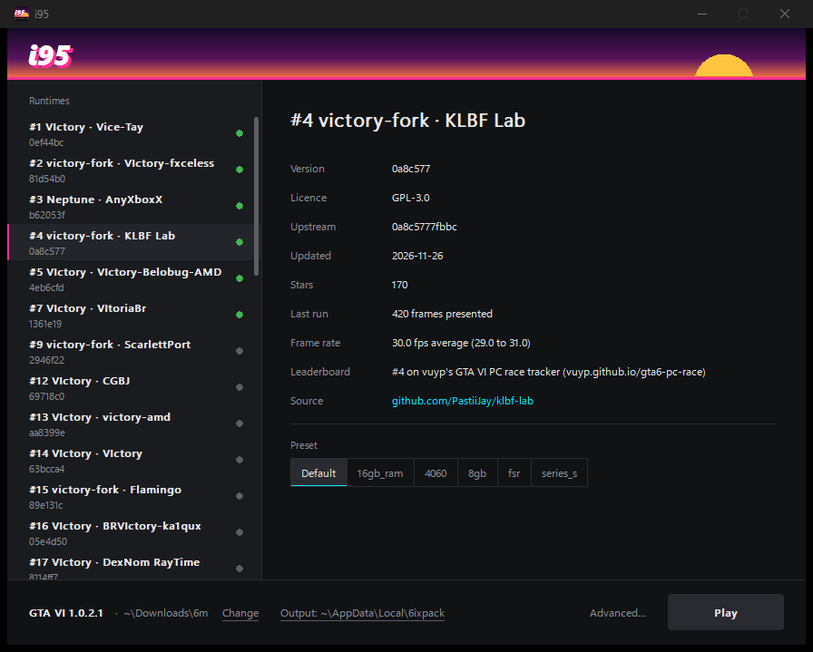

i95: GTA 6 PC Launcher
i95 is a free Windows app that runs the projects trying to bring the Xbox Series version of GTA VI (GTA 6) to PC. It compiles every runtime from source on your own PC, so you never run an exe someone else built. It doesn't include or download the game.
Not playable yet. The GTA VI PC race tracker counts a runtime as playable at 20 fps for 30 minutes without a crash, and none has reached that yet.
Download Source on GitHubScreenshots


Runtimes in the launcher
Ranked as on vuyp's GTA VI PC race tracker:
- Vice-Tay
- KLBF Lab
- VI-BR-PORT
- VIctory-7900XTX
- Kelvaroq
- VIctory-RDNA
- VItoriaBr
- AnyXboxX
- victory-fork (VIctory-fxceless)
- Victory-United
- CBL VIctory
- VIctory-Belobug-AMD
- VIctory-NVIDIA
- CGBJ
- Flamingo
- Vertex
- ruff-lab
- victory-unified
- VIniVIdiVIci
- darkworldhm
- Vilocity
- BRVIctory-ka1qux
- ScarlettPort
- victory-amd
- DexNom RayTime
- VIctory (the original)
Also included: VKarameloVI, cool-fox-12gb and i95-Victory, our own fork of Kelvaroq with 8 GB and skin fixes.
Questions
Can I play GTA 6 on PC? Not yet. These projects reach the game world, but at low frame rates and with missing graphics.
Is it free? Yes. i95 is open source under GPL-3.0, and every runtime is credited to its authors.
Does it download the game? No. There are no game files in it.